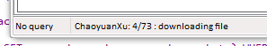

what are subs?
Subscriptions are a way of telling the client to regularly check a particular web search. Any new files will be downloaded and imported, and their tags optionally parsed.
You can set up a subscription for any of the gallery websites in the normal new page->download->gallery menu.
Here's the dialog, which is under services->manage subscriptions:

Here I have one subscription for Deviant Art, for the artist ChaoyuanXu. The client is set to check this artist for new files to import every seven days, and it will parse the respective creator and title tags and send them to the tag repository called 'public tag repo'.
The subscription synchronisation daemon (the subroutine that checks and imports from the websites) works very much like the one that synchronises hydrus repositories. It works in the background, and reports its current status similarly. When it is time for it to do some work, it will put a little text in the client's statusbar, like so:

You don't really have to care about this all that much; it just lets you know what it is doing.
Errors will be recovered from as gracefully as possible, and details written to the log. The subs daemon will retry the next day.
Here's the result of the subscription I set up above:

It took about two minutes to download all that, and it all happened quietly in the background. Notice the 146 pending tags, up top.
how could this possibly go wrong?
This is quite a powerful tool, and if you are silly, you will end up spamming a server and likely upsetting someone or breaking something.
To initialise a subscription, the daemon will parse every single gallery and image page for that particular search. This is fine for the example above, which had 4 gallery pages and 73 image pages, but the search "short hair" on safebooru has about 6,400 gallery pages encompassing >250,000 results! Trying a search like that will take a tremendous amount of time for you and cause a non-trivial CPU and data hit to their server.
Remember: If you are going to scrape another's site, be polite about it!
So, I advise you start with artist searches to begin with. These usually top out at about 1,000 files, and hence don't take all that long to do. Once you are more confident, try doing multiple-tag queries. I suggest you leave simple single-tag queries for the manual download page, where you can hit 'that's enough' after ten or twenty pages.
help! it won't stop!
If you do put in a huge search, and the 'found x new files for subscription y' message is climbing terrifyingly higher and higher with no end in sight, you can pause the subscriptions daemon with services->pause->subscriptions synchronisation.
This will give you a breather to edit your subscriptions in the dialog. Just unpause to continue with your new subs.